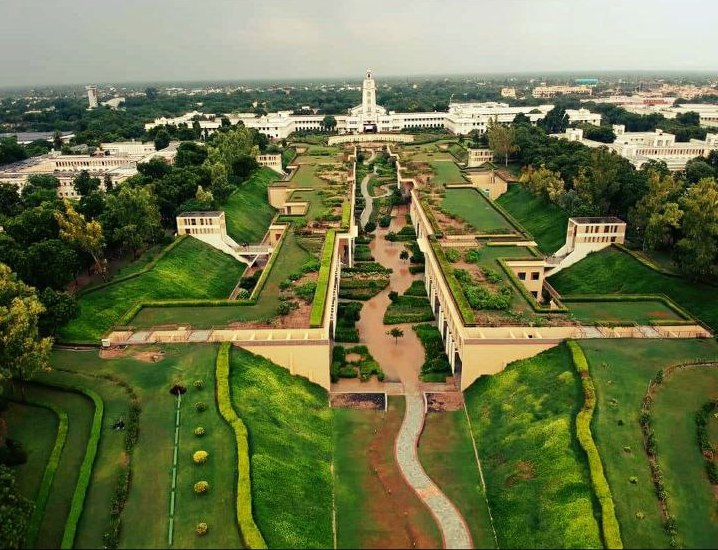
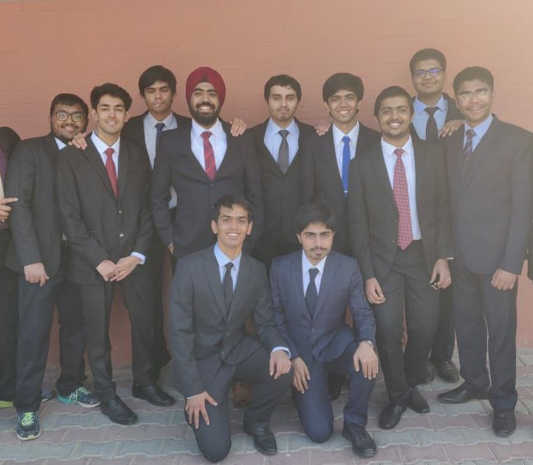
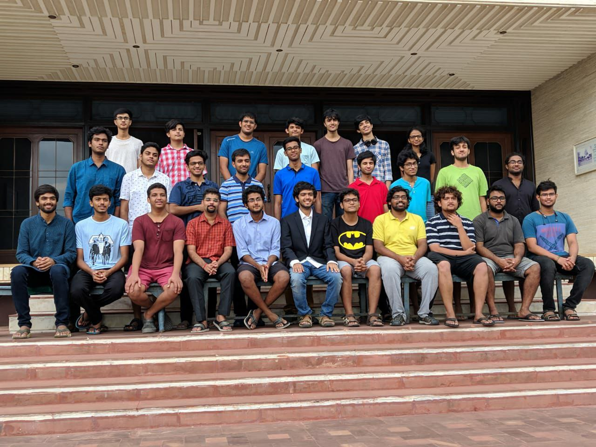
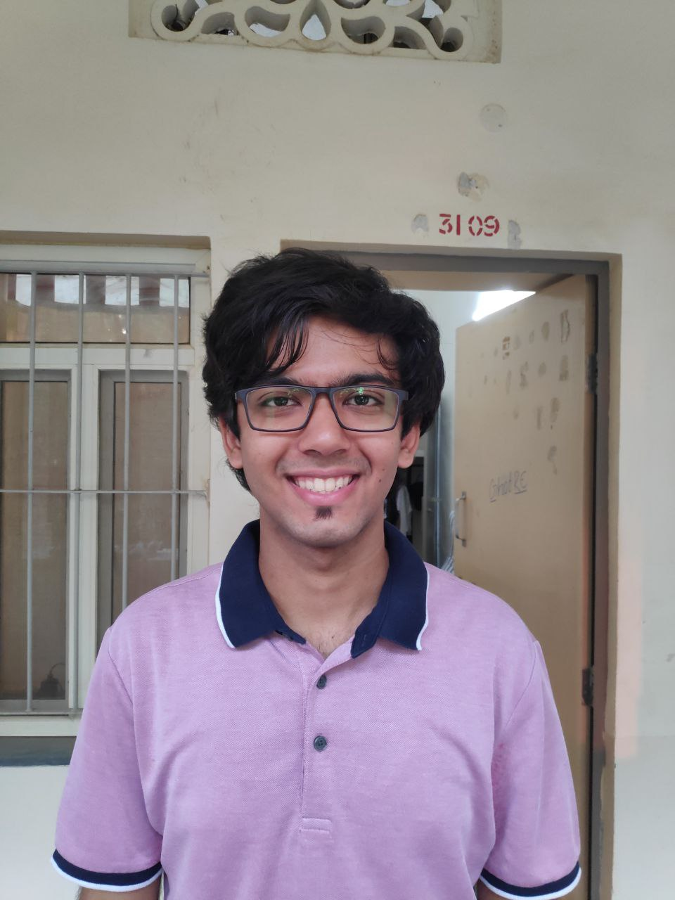
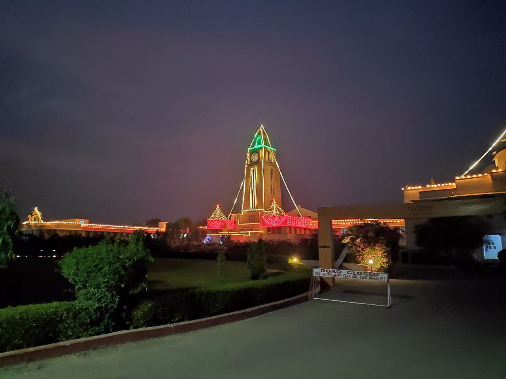
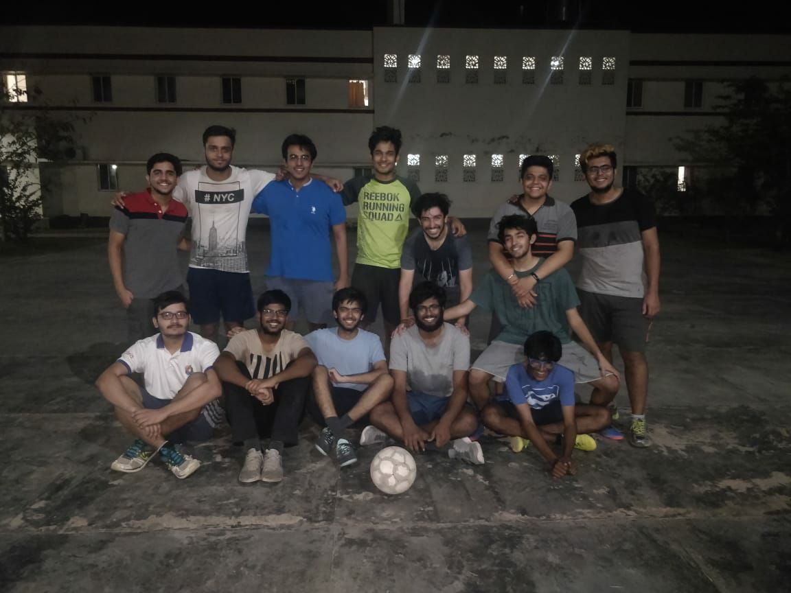
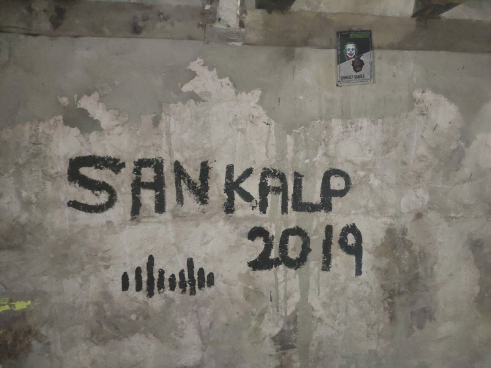

Best place to start is from the start I
guess. My BITSAT hall ticket. I wrote BITSAT at MIT. Maharashtra Institute of Technology 😂. (May 2016)
First visit to Akshay, the campus departmental
store. As usual, went straight for the chips. I was very chubby here, fresh from class 12. (July 2016)
(L) The very first photo I took of the iconic
Clock Tower. This was right after our orientation ceremony. (R) My art of the clock tower, combining it with
Starry Night! (July 2016) Fresh after being inducted as practically an
errand boy into The Department of Stage Controls. (September 2016) Breakfasts at Pilani! The one meal of the
day which was uniformly good everyday. It's a pity I skipped breakfast about 50% of my time here 🥲.
(September 2016) Welding in the workshop. Boys just need a
reason to pose. (September 2016) Compering for the Oasis 2016 inauguration
ceremony! I was a member of Stage Controls, responsible for all stage events. (October 2016) Everyone in the wing, studying for the
end-sem examinations 🤓. (November 2016) My Backstage batch, trying to create
imaginary album art for our imaginary rock band. L to R: Saharsh, Patil, Ashwin, Me. (March 2017)
Our structure created for Apogee 2017,
displayed outside the Auditorium. (March 2017) There is a story behind this picture.
Follow the link to find out! https://www.instagram.com/p/CIgqZKxskvT/ (May 2017)
"Uncle, ek cheez curry aur ek masala dew.
Curry mein oregano mat daalna!" (August 2017) Our structure created for Oasis 2017.
Oasis '17, written in Star Wars font, all in string art! L to R: Me, Ashwin, Patil, Pai, Mohit, Naveen.
(October 2017) Every college student has an inexplicable
long-hair phase. This was mine in my sophomore year. (March 2018) Unpredictable Pilani weather!
Thunderstorms in the summer! The sky would legitimately turn purple, that is not photoshop. (April 2018)

Pilani after the heaviest rains I have
ever seen. The NAB pathway (middle of the screen) had turned into a chocolate river! (April 2018) A cool Vyas Bhawan (Dorm) evening. Scent
of smoke in the air, Hey Jude playing in the wing somewhere, and the faint echoes of a wedding baaraat
happening outside campus. (August 2018) The common room. A place to socialize
with familiar aliens from different wings, all amidst the banter of seeing your team lose. (September 2018)
Now in my third year of college, I was no
longer the errand boy. I now had errand boys working for me. Backstage 2018. (September 2018) I painted the Eye of Horus, as a good
luck sign to participants who would assemble in the Backstage booth room. That's what I tell people. In
reality I wanted to do vandalizing graffiti once in my life 😂. (October 2018) Oasis 2018. Capture credits: A pretty(,)
decent photographer. (October 2018) With the pretty, decent photographer 😉.
(October 2018) All the world's a stage, And all the men
and women merely players; (October 2018) Enjoying a classic! The chocolate
Midnight Beauty at Sharma's! (November 2018) With my room-pop (The person who lived in
my room earlier) from 1978. There are 40 generations of Bitsians between us. Was a truly humbling experience.
And he looks exactly like my dad will without a moustache! (November 2018) A satisfied smile on seeing Chicken
Biryani in the mess on Sundays. (January 2019) The famous Pilani fog during the winter.
Cycle in this at your own risk! (January 2019) Batch snaps! When we had the freedom to
dress up the way we wished to. Here's me, donning a Roman Toga, along with Venkat Nalla, the sexy sheikh from
Sharjah. (February 2019) Backstage 2016. L to R: Sonpari Mohit,
Gunda Saharsh, Caesar Sankalp, Aditya Patil, Bob Ross Naveen, Aditya Pai, Ashwin Sudarshan. (February 2019)
(L) Me with my Freshman roommate
Siddharth. (May 2017) (R) Me with my Freshman roommate Siddharth. (May 2019) Ozymandias. (February 2019)

With my wing. The people I was closest
to. L to R: Parth, Arnav, Dhaivata, Gunraj, Aashish (sitting), Anuvind, Sawhney (sitting), Me, Bothra, Rohit,
Jain (February 2019) One picture one last time. (May 2019)
Leaving Vyas Bhawan. My home for 2 years.
(May 2019) Twilight in Pilani. The start of my final
semester. (August 2019) The view from my room in Gandhi Bhawan.
Perfect for birdwatching. Heh. (August 2019)

Coordinator of The Department of Stage
Controls, 2019. In short, everybody was my errand boy. (September 2019) Proof of the previous statement. (October
2019)

Got diagnosed with needing spectacles for
the first time. My IQ increased by 1.5 instantly. (October 2019) Psenti Oasis. (October 2019) With the pretty, decent photographer 😉.
(x2) (October 2019)

Pilani waali Diwali. (November 2019)
August 2016. May 2017. December 2019.
Long ride.

Psenti football! (December 2019)
(Top) ACM Farewell. (Bottom) Backstage
farewell (kind of). (November 2019) Batch farewell dinner. (November 2019)

Painted by my juniors at a location only
Backstage folks know about. Hopefully it stays there for years. (Date: Cannot disclose) Checking out of campus one last time.
(December 2019) Welcome, the sign said. And welcomed I
was! Pilani, it's magic! (December 2019) 1/49